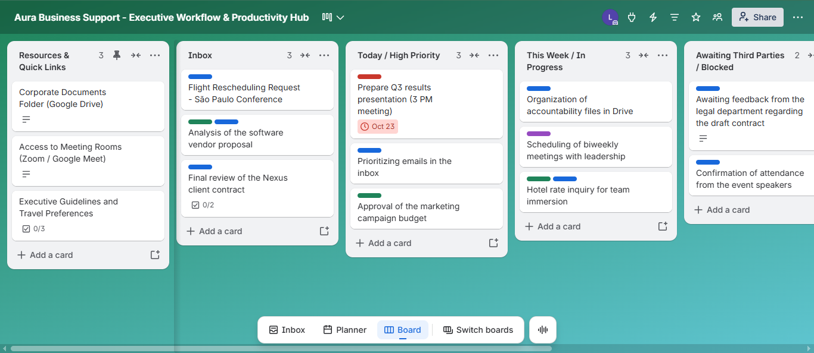
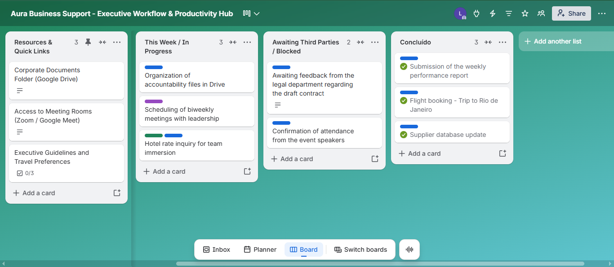

Central Executiva de Tarefas & Rotinas
Ferramentas: Trello (Kanban)
Criado com o objetivo de estruturar a rotina executiva da fictícia chamada Aura Business Support, este quadro Kanban centraliza o fluxo de trabalho de forma clara através de listas e etiquetas personalizadas. O sistema promove uma melhor visualização das demandas diárias, reduzindo gargalos operacionais e aumentando a eficiência na tomada de decisões.
Visite o projeto